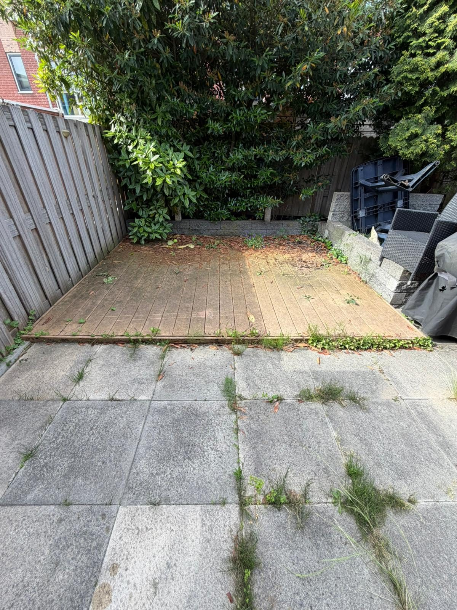
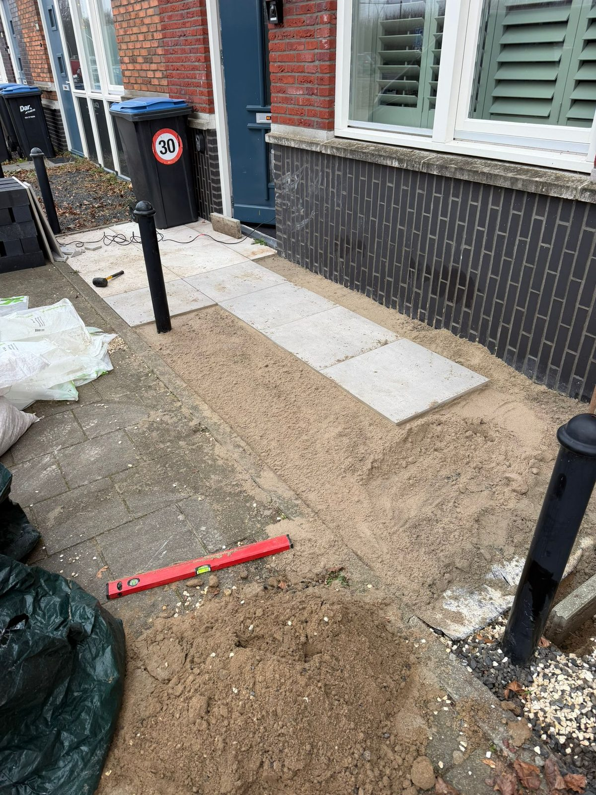

Resultaten Die Spreken
Voor & Na

unfold_more
Voor
Na
Achtertuin Renovatie
"Van een verwilderde, overwoekerde wildernis tot een strakke, moderne loungetuin met een prachtige zwarte schutting, luxe klinkers en strakke borders."

unfold_more
Voor
Na
Gazon & Borders
"Van een dorre, onbegaanbare vlakte naar een strak, diepgroen gazon met nette witte grindborders, beplanting en een prachtige loungebank."

unfold_more
Voor
Na
Oprit Bestrating
"Zwaar verzakte, met onkruid overwoekerde oprit volledig hersteld. De oprit is opnieuw geëgaliseerd, gefundeerd en voorzien van strak gelegde moderne klinkers."